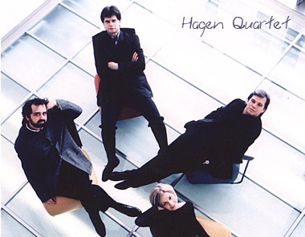

Bartók rocks!
donderdag 5 februari 2004 | Kultuur
Op vrijdag 6 februari, tussen acht en negen, zendt Klara een concert uit van vorige week zondag in de Bijloke in Gent van drie strijkkwartetten van Béla Bartók (1881-1945), gebracht door het befaamde Hagen Kwartet.
“… These quartets can sound tough and uncompromising to tender ears but once you gently get to know them i.e. while studying or reading, your mind almost unconsciously unlocks the music and you soon are struck by the realisation that this is amongst the most beautiful, moving and exciting music you may ever hear.”
“… Those who claim there is no ‘structure and melody’ should listen more closely. And those who have declared this to be ‘noise without direction’ should stick to Britney Spears.”
— Bloemlezing uit enkele reviews op Amazon.co.uk over de uitvoering door het al even befaamde Emerson Kwartet.
“Aangrijpende muziek waarvoor u even moet gaan zitten”, staat te lezen in de programmering van Klara. De zes strijkkwartetten van de Hongaarse componist worden algemeen beschouwd als een sleutelelement binnen de Westerse muziekgeschiedenis — een eer die de fragiele Bartók overigens pas na zijn dood te beurt viel (hoe typisch!). Dus als het even kan: luisteren! Ik zal in ieder geval thuis met de vinger op de record-knop klaarzitten.

Frederik Vandaele op 22 februari 2004
Hun dubbel cd is fenomenaal.